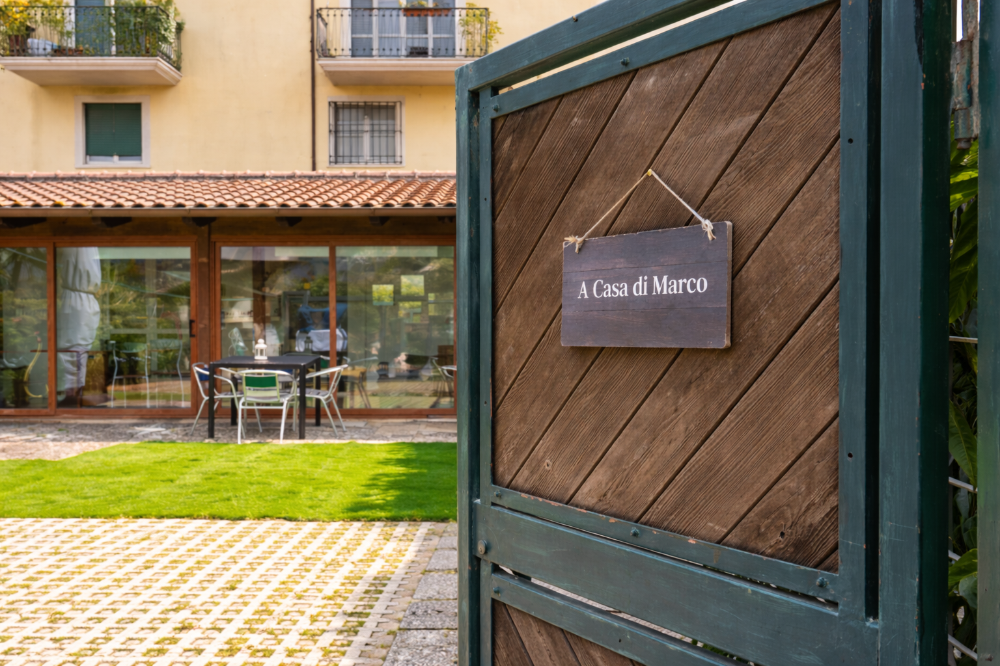

Parcheggio
È possibile parcheggiare nel giardino della casa oppure fuori sulla strada, prima della curva per entrare.

È possibile parcheggiare nel giardino della casa oppure fuori sulla strada, prima della curva per entrare.
